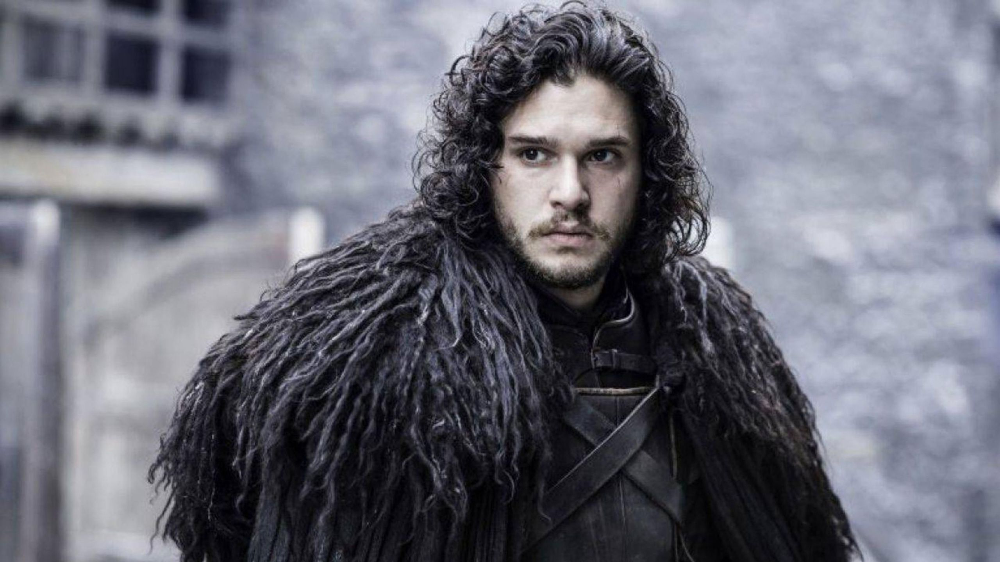
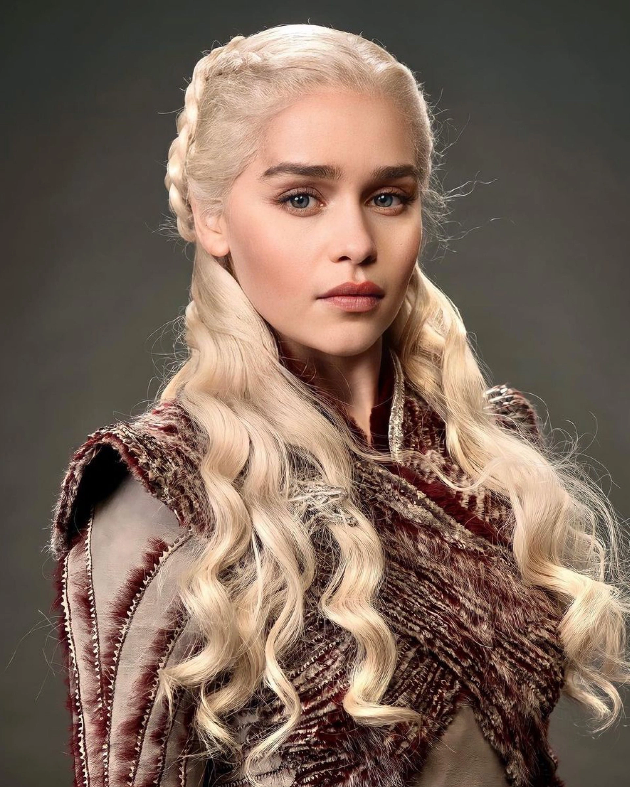
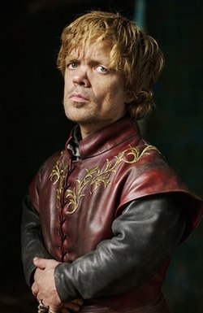
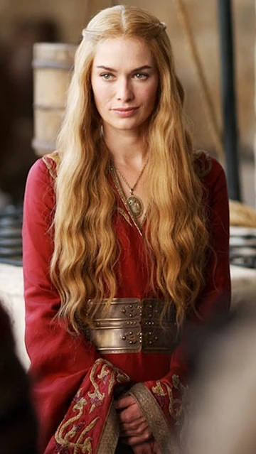
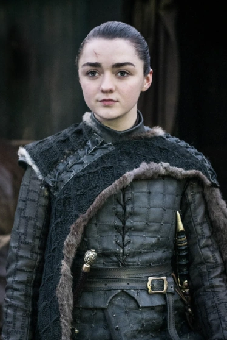
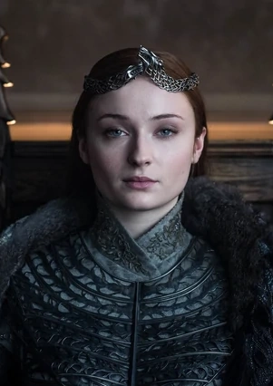

Los protagonistas de la saga

El Rey en el Norte, Lord Comandante
Hijo bastardo de Ned Stark, criado en Winterfell junto a sus medio hermanos. Se une a la Guardia de la Noche donde asciende hasta convertirse en Lord Comandante. Su destino está entrelazado con la amenaza de los Caminantes Blancos.
Casa Stark
Madre de Dragones, Khaleesi
Última heredera de la Casa Targaryen, exiliada desde niña. Renace de las llamas con tres dragones y construye un ejército para reclamar el Trono de Hierro. Es conocida como la Rompedora de Cadenas por liberar esclavos.
Casa Targaryen
El Gnomo, Mano de la Reina
El hijo menor de Tywin Lannister, despreciado por su familia debido a su enanismo. Compensa su estatura con su ingenio y astucia política. Es uno de los personajes más inteligentes y mordaces de la serie.
Casa Lannister
Reina de los Siete Reinos
Reina consorte y luego Reina reinante, Cersei es ambiciosa, despiadada y protectora de sus hijos. Su relación incestuosa con su hermano Jaime es uno de los secretos más oscuros del reino.
Casa Lannister
Nadie, La Niña Lobo
La hija menor de Ned Stark, rebelde y aventurera. Tras presenciar la ejecución de su padre, emprende un viaje que la transforma de niña noble a asesina entrenada. Mantiene una lista de personas que debe matar.
Casa Stark
Dama de Winterfell, Reina en el Norte
La hija mayor de los Stark, inicialmente ingenua y romántica. Los horrores que sufre en Desembarco del Rey la transforman en una mujer astuta y resistente, capaz de jugar el juego de tronos.
Casa Stark¿Cuál fue tu momento favorito de la serie? Compártelo con nosotros.